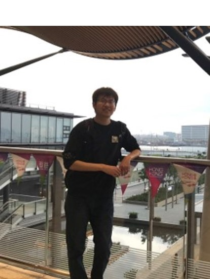

|
 |
I am a fourth year Ph.D student advised by Prof. Jae Ho Kim in Image and A.I. Lab, Department of Electronics Engineering, Pusan National University. Before that, I received my B.S. Degree in School of Information Science and Engineering from Shandong University in 2011 and M.S. Degree in School of Electrical and Electronic Engineering from Nanyang Technological University in 2014. My research interests include image processing, computer vision, and deep learning, etc. Email: pandalgx@gmail.com CV ⋅ ResearchGate ⋅ Blog |
News
- 2020/05: I defended my Ph.D. thesis titled Machine Vision and Deep Learning Study for Tomato Detection System.
- 2020/04: Our paper "YOLO-Tomato: A Robust Algorithm for Tomato Detection based on YOLOv3" is accepted by Sensors.
- 2020/04: Our paper "Bioelectrical Impedance Spectroscopy (BIS) Monitoring of Lettuce during 19 Hours" is accepted by8th International Symposium on Sensor Science (I3S'20), which will be held in Dresden, Germany.
- 2020/01: Our paper "Facial Expression Recognition of Animated Human Characters" is accepted by ICMLC'20.